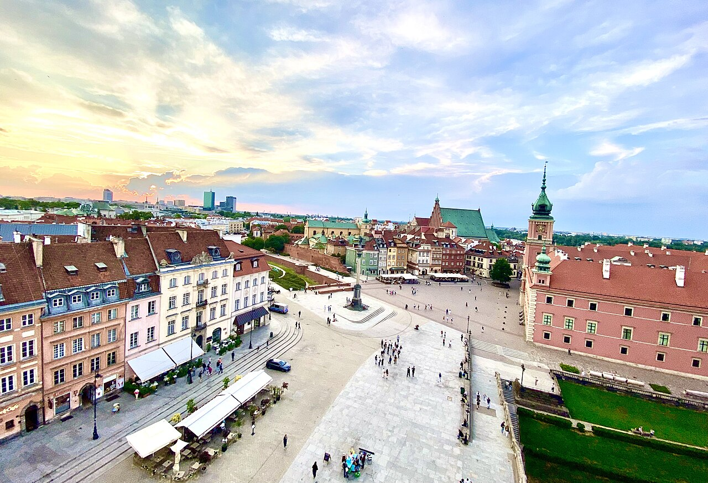
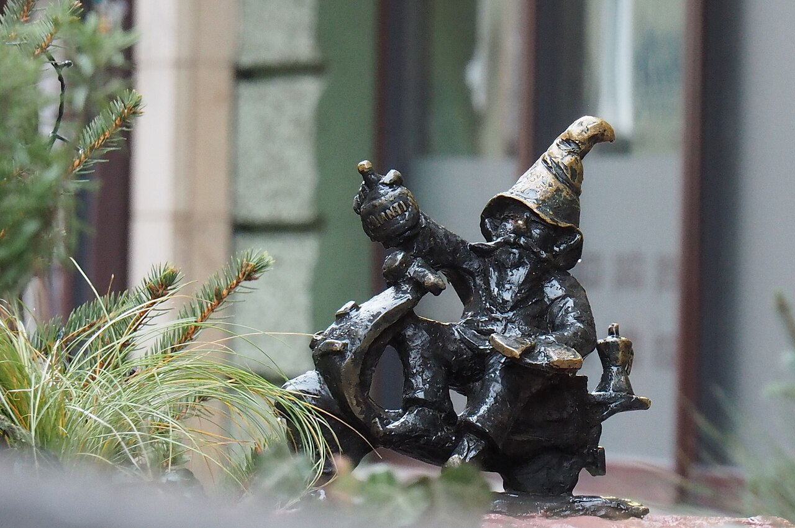
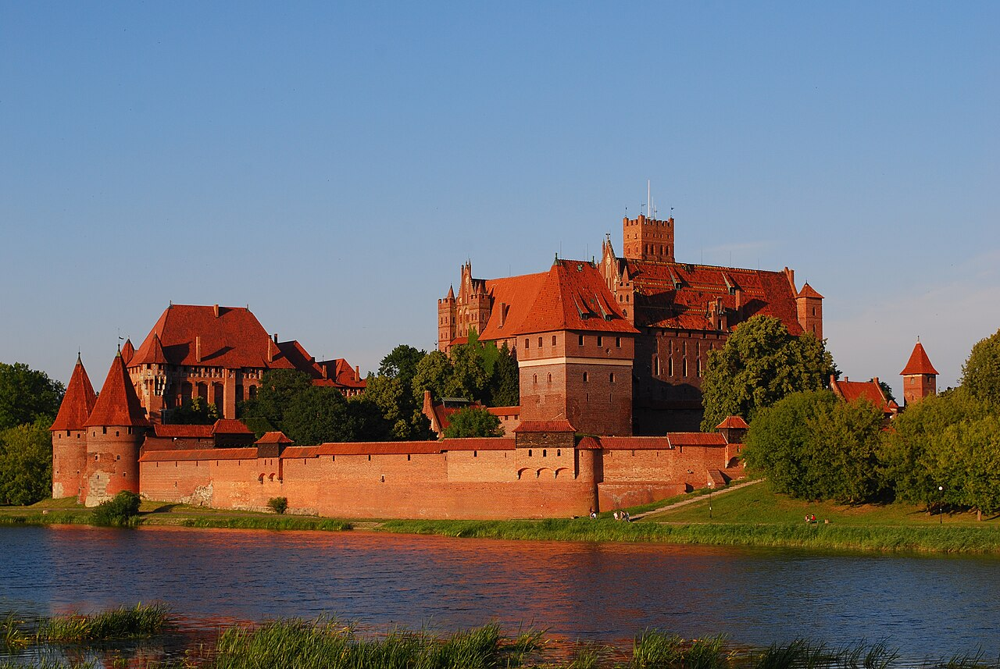
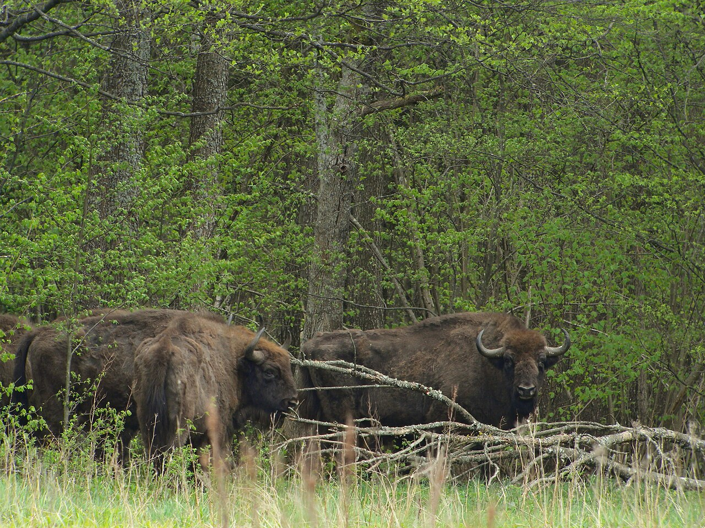
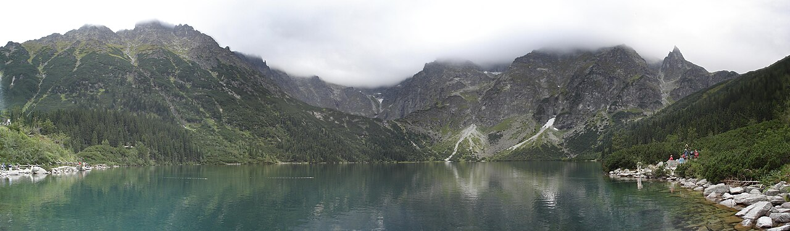
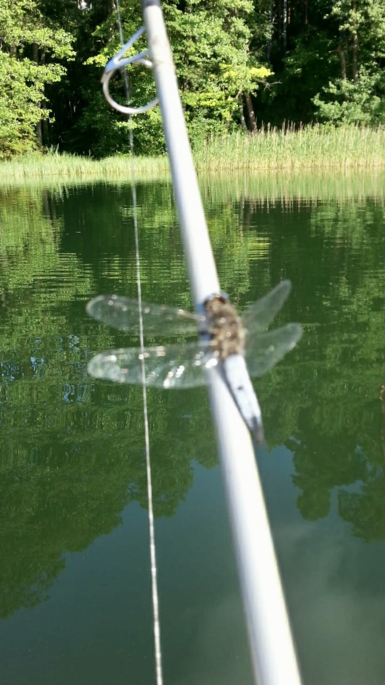

한눈에 보기
- 직항인천 → 바르샤바LOT 폴란드항공, 약 13시간
- 시차한국보다 8시간 느림서머타임(3월 말~10월 말)에는 7시간
- 추천 시기5~6월, 9월12월은 크리스마스 마켓 여행으로 추천
- 추천 일정7~10일바르샤바 2 + 크라쿠프 3 + 그단스크 또는 자코파네 2
- 물가서울과 비슷하거나 조금 저렴외식은 비슷, 마트·교통·기차는 확실히 저렴
- 통화즈워티(PLN, zł)1zł ≈ 375원. 유로를 쓰지 않음
- 입국무비자 90일솅겐 국가 전체 합산 180일 중 90일
- 전압230V · C/E형한국 플러그 대부분 그대로 사용
어떤 여행을 할 수 있나?
- 역사도시 여행: 바르샤바·크라쿠프·브로츠와프·그단스크. 도시별로 왕도, 재건, 독일·체코·폴란드의 역사, 발트해 무역이라는 다른 주제로 접근할 수 있다.
- 세계유산·산업유산: 말보르크 성, 비엘리치카 소금광산 등에서 중세 건축과 광산 노동을 이해한다.
- 자연·레저: 비아워비에자 숲, 타트라산맥, 마주리 호수에서 산행·생태·수상활동을 즐긴다.
한국에서 가는 법
LOT 폴란드항공
주 5~7회- 노선
- 인천(ICN) → 바르샤바 쇼팽(WAW)
- 편명
- LO98·LO100 (돌아오는 편 LO97·LO99)
- 운항 요일
- 하계(5월~)는 매일 운항 계획, 동계는 주 5회 안팎으로 줄어드는 경우가 많음
- 비행 시간
- 갈 때 약 13시간 · 올 때 약 11시간 30분
- 기종
- 보잉 787 드림라이너
러시아 영공을 피해 돌아가므로 예전보다 1~2시간 깁니다. 바르샤바에서 크라쿠프·그단스크·브로츠와프행 LOT 국내선으로 같은 날 갈아탈 수 있습니다(약 1시간).
직항 말고 이렇게도 갈 수 있어요
- 헬싱키(핀에어)·프랑크푸르트·뮌헨(루프트한자)·이스탄불(터키항공) 등을 거치면 크라쿠프·그단스크로 바로 들어갈 수 있습니다. 총 15~18시간.
- 프라하 직항(대한항공·아시아나)으로 들어가 기차로 이동하는 방법도 있습니다. 프라하 → 브로츠와프 약 4시간 30분, 프라하 → 크라쿠프 약 7시간(야간열차는 시즌·요일 확인).
- 바르샤바로 들어가고 크라쿠프에서 나오는(경유편) 다구간 항공권을 쓰면 되돌아오는 이동을 줄일 수 있습니다.
운항 횟수와 요일은 시즌(3월 말·10월 말 교체)마다 바뀝니다. 아래 수치는 2026년 하반기에 확인한 범위이므로, 예약 전에 LOT 공식 사이트에서 날짜를 넣어 확인하세요.
언제 가면 좋을까
바르샤바의 월평균 최고·최저 기온과 강수량입니다. 아래 칸의 색은 여행하기 좋은 정도입니다.
크라쿠프는 1~2도 따뜻하고, 그단스크(바닷가)는 여름이 선선하고 바람이 셉니다. 해 지는 시각: 12월 오후 3시 25분 무렵, 6월 밤 9시 무렵.
봄
3~5월긴 겨울이 끝나고 공원과 광장에 사람이 돌아옵니다. 부활절 장식과 시장이 서고, 5월에는 대학 축제(유베날리아)와 녹음이 도시를 채웁니다.
좋은 점
- 관광객이 적고 숙소가 저렴
- 5월 날씨가 가장 걷기 좋음
- 부활절 전통을 볼 수 있음
아쉬운 점
- 3~4월은 쌀쌀하고 날씨가 변덕스러움
- 부활절·5월 초 연휴(마유프카)에는 국내 여행객으로 숙소가 붐빔
옷차림경량 패딩과 겹쳐 입을 옷, 우산
여름
6~8월밤 9시까지 해가 남아 야외 공연과 강변 바가 활기찹니다. 발트해 해변, 마주리 호수, 타트라 산행이 제철입니다.
좋은 점
- 낮이 길어 하루 일정을 많이 넣을 수 있음
- 모든 명소·산길·배편이 운영
- 야외 축제와 무료 공연이 많음
아쉬운 점
- 크라쿠프·자코파네·그단스크가 가장 붐비고 숙소가 비쌈
- 에어컨 없는 숙소·트램이 많음
- 소나기와 30도 넘는 폭염일
옷차림반팔과 얇은 겉옷, 산행 시 방수 재킷
가을
9~11월9월은 늦여름처럼 따뜻하고, 10월에는 폴란드 사람들이 "황금빛 폴란드의 가을(Złota polska jesień)"이라 부르는 단풍이 듭니다. 11월 1일 밤에는 묘지가 촛불로 가득 찹니다.
좋은 점
- 9월은 날씨·인파·가격의 균형이 가장 좋음
- 단풍 든 타트라와 공원
- 공연·전시 시즌 시작
아쉬운 점
- 11월은 흐리고 비가 잦으며 오후 4시면 어두움
- 산간 지역은 날씨 변화가 큼
옷차림9월 가벼운 재킷, 10~11월 코트와 방수 신발
겨울
12~2월광장마다 크리스마스 마켓과 조명이 켜지고 따뜻한 와인(그자니에츠) 향이 퍼집니다. 자코파네는 스키와 설경 여행지가 됩니다.
좋은 점
- 크라쿠프·바르샤바 크리스마스 마켓
- 1~2월은 항공·숙소가 가장 저렴
- 자코파네 스키
아쉬운 점
- 영하의 날씨와 빙판길
- 해가 짧아 관광 시간이 줄어듦
- 남부 도시는 난방철 대기오염이 심한 날이 있음
옷차림두꺼운 패딩, 모자·장갑, 미끄럼 방지 신발
여행자도 즐길 수 있는 축제·행사
-
2월
기름진 목요일Tłusty Czwartek
사순절 직전 목요일(2027년은 2월 4일). 빵집 앞에 줄을 서서 도넛 퐁치키(pączki)를 사 먹는 날입니다.
여행 팁아침 일찍 가야 인기 빵집의 퐁치키가 남아 있습니다.
-
3~4월
부활절Wielkanoc
성토요일에 음식 바구니를 성당에서 축복받는 전통(시비엥초나)이 있고, 부활절 월요일에는 서로 물을 뿌리는 시미구스-디응구스(Śmigus-dyngus)를 합니다.
여행 팁부활절 일·월요일에는 상점 대부분이 닫습니다. 2027년은 3월 28·29일.
-
5월 중순
박물관의 밤Noc Muzeów
토요일 저녁부터 자정 넘어까지 바르샤바·크라쿠프 등 여러 도시의 박물관을 무료나 소액으로 엽니다.
여행 팁인기 박물관은 줄이 길어 두세 곳만 골라 다니는 편이 좋습니다.
-
5~9월 일요일
라지엔키 공원 쇼팽 콘서트Koncerty Chopinowskie
바르샤바 라지엔키 공원 쇼팽 동상 앞에서 매주 일요일 정오와 오후 4시에 무료 피아노 공연을 엽니다.
여행 팁돗자리를 가져가 잔디에 앉아 듣는 사람이 많습니다.
-
6월 하순
빈키(화관) 축제Wianki
하지 무렵 크라쿠프 비스와 강변에서 화관을 강에 띄우는 옛 풍습을 잇는 공연과 불꽃놀이가 열립니다.
여행 팁바벨성 아래 강변이 중심 무대입니다.
-
6월 말~7월 초
유대 문화 축제Festiwal Kultury Żydowskiej
크라쿠프 카지미에시 지구에서 열리는 음악·강연·워크숍 축제로, 마지막 날 야외 대형 콘서트가 유명합니다.
여행 팁카지미에시 숙소는 일찍 마감됩니다.
-
7월 초
오프너 페스티벌Open'er Festival
그디니아 해안에서 열리는 폴란드 최대 음악 페스티벌. 세계적 팝·록 가수가 출연합니다.
여행 팁삼도시권(그단스크·소포트·그디니아) 숙소가 모두 비싸집니다.
-
7월 말~8월
성 도미니크 시장Jarmark św. Dominika
1260년부터 이어온 그단스크의 큰 장터. 약 3주 동안 구시가지 거리가 노점과 공연으로 채워집니다.
여행 팁골동품·호박(앰버) 노점이 볼거리입니다.
-
8월 1일
바르샤바 봉기 기념 "W시"Godzina W
1944년 봉기가 시작된 오후 5시에 사이렌이 울리면 거리의 차와 사람이 1분 동안 멈춰 섭니다.
여행 팁이 시각에는 함께 멈춰 서는 것이 예의입니다.
-
11월 1일
모든 성인의 날Wszystkich Świętych
가족 묘지를 찾아 촛불을 켜는 날. 밤의 포봉즈키 묘지(바르샤바)는 수만 개의 촛불로 빛납니다.
여행 팁추모의 날이므로 조용히 둘러보고, 묘지 주변 교통 통제를 확인하세요.
-
11월 말~12월
크리스마스 마켓Jarmark Bożonarodzeniowy
크라쿠프 중앙광장, 바르샤바 구시가지, 브로츠와프 광장의 마켓이 유명합니다. 12월 첫 목요일 크라쿠프에서는 유네스코 무형유산인 크리스마스 구유(쇼프카, szopka) 경연 작품이 전시됩니다.
여행 팁브로츠와프 마켓은 규모가 커서 저녁 시간이 특히 붐빕니다.
공휴일과 기념일
| 날짜 | 공휴일 | 여행자에게 미치는 영향 |
|---|---|---|
| 1월 1일 | 새해 | 상점 휴무 |
| 1월 6일 | 주현절(동방박사의 날)거리에서 동방박사 행렬을 함 | 상점 휴무 |
| 부활절 일·월 (2027년 3월 28·29일) | 부활절가장 큰 종교 명절 | 이틀 모두 상점 휴무, 대중교통 휴일 시간표 |
| 5월 1일 · 5월 3일 | 노동절 · 5월 3일 헌법 기념일1791년 유럽 최초의 성문 헌법을 기념 | 5월 1~3일은 "마유프카" 연휴. 국내 여행이 몰려 숙소가 비쌈 |
| 부활절 후 60일 목요일 (2027년 5월 27일) | 성체 축일성당 주변에 꽃길과 성체 행렬 | 금요일을 붙여 4일 연휴가 되는 경우가 많음 |
| 8월 15일 | 성모 승천 대축일 · 군인의 날바르샤바에서 군 행사가 열리기도 함 | 상점 휴무, 여름 성수기와 겹침 |
| 11월 1일 | 모든 성인의 날묘지 촛불 추모 | 상점 휴무, 묘지 주변 교통 통제 |
| 11월 11일 | 독립 기념일1918년 독립 회복 | 바르샤바 대규모 행진으로 도심 일부 통제 |
| 12월 24~26일 | 성탄 전야 · 성탄절24일 저녁 가족 만찬(비길리아)이 가장 중요한 행사 | 2025년부터 24일도 공휴일. 사흘 동안 식당·상점 대부분 휴무 |
폴란드는 일요일과 공휴일에 대형 마트와 상점 대부분이 문을 닫습니다(1년에 몇 번 정해진 "쇼핑 일요일" 제외). 편의점 쟈프카(Żabka), 주유소, 약국, 기차역 매점은 엽니다. 일요일 전에 간식과 물을 사 두세요.
물가: 서울과 비교하면
서울과 비슷하거나 조금 저렴합니다. 카페와 식당은 서울과 비슷하고, 마트 물가·대중교통·장거리 기차는 확실히 쌉니다. 명소 입장료는 한국 고궁·박물관보다 훨씬 비쌉니다.
환율 기준: 1즈워티(zł) ≈ 375원 · 막대의 진한 부분은 최저가, 연한 부분은 최고가까지입니다.
-
카페 카푸치노약 20% 비쌈
-
펍 생맥주 0.5L약 31% 비쌈
-
우유바(바르 므레치니) 한 끼약 22% 비쌈
-
중급 식당 메인 요리비슷
-
마트 맥주 0.5L 캔약 47% 저렴
-
마트 생수 1.5L약 31% 저렴
-
시내 대중교통 1회 (바르샤바 75분권)약 11% 비쌈
-
앱 택시(볼트·우버) 시내 5km약 29% 비쌈
-
기차 바르샤바 → 크라쿠프 (약 2시간 20분)약 12% 비쌈
-
3성급 호텔 더블룸 1박약 30% 비쌈
-
주요 명소 입장권약 13배
현지 가격은 2026년 하반기 바르샤바·크라쿠프 기준 대략적인 범위이며, 원화는 1zł = 375원으로 계산했습니다. 관광 중심가와 성수기에는 더 비싸고, 소도시는 10~20% 쌉니다. 가장 비싼 입장권은 비엘리치카 소금광산입니다.
현지 교통
공항에서 시내로
바르샤바 쇼팽공항에서 SKM 기차 S2·S3이나 175번 버스로 시내까지 20~25분. 일반 시내 승차권(75분권) 하나로 탈 수 있습니다. 크라쿠프 공항은 기차로 중앙역까지 약 20분.
약 4.4~4.8zł (1,700원 안팎)
시내 대중교통
트램·버스·지하철(바르샤바만)을 시간제 승차권 하나로 갈아탑니다. 정류장 자판기나 차내 단말기에서 비접촉 카드로 사고, 종이표는 탑승 직후 반드시 펀칭합니다. 길 찾기는 Jakdojade 앱이 편합니다.
20분권 3~4zł, 24시간권 약 15zł
도시 간 이동
PKP 인터시티 고속열차(EIP)가 바르샤바–크라쿠프 약 2시간 20분, 바르샤바–그단스크 약 2시간 50분. 일찍 예매할수록 싸고, 지정석이라 성수기에는 미리 사야 합니다. 크라쿠프–자코파네는 버스가 더 빠릅니다(약 2시간).
60~200zł (2~7만 원)
택시와 앱
볼트(Bolt)·우버·프리나우가 널리 쓰이고 서울 택시보다 조금 비싼 수준입니다. 공항·역 앞 호객 택시는 피하세요.
시내 5km 20~35zł
장점과 단점
이래서 좋아요
- 인천에서 직항이 있고 바르샤바에서 국내선 연결이 쉬움
- 서유럽보다 숙박·교통·장보기가 저렴
- 크라쿠프·그단스크 등 구시가지가 잘 보존되어 걷기만 해도 볼거리가 많음
- 치안이 대체로 좋고, 카드·애플페이가 거의 어디서나 됨
- 수프·고기·만두(피에로기) 등 한국인 입맛에 맞는 음식이 많음
이건 알고 가세요
- 직항 항공사가 하나뿐이라 시간·가격 선택이 좁음
- 일요일·공휴일 상점 휴무로 일정 계획이 필요
- 도시 사이 거리가 멀어 이동에 하루의 절반이 쓰이기도 함
- 겨울은 해가 짧고 춥다
- 아우슈비츠-비르케나우 등 무거운 역사 유적은 마음의 준비가 필요
관광 명소
사진은 Wikimedia Commons에 공개된 실제 촬영본이며, 저작자와 라이선스를 각 사진 아래에 적었습니다. 촬영한 날씨·시기·구도에 따라 실제 모습은 다를 수 있습니다.
-

사진: Steven1991 · CC BY-SA 4.0 · Wikimedia Commons 바르샤바 구시가지Stare Miasto w Warszawie
2차 세계대전의 파괴 이후 복원된 수도의 역사 지구. 재건의 의미를 알아보는 관광지다.
자세히 보기
바르샤바 구시가지는 왕궁과 성 광장(Plac Zamkowy), 구시가지 광장(Rynek Starego Miasta), 성벽 구간이 핵심이다. 독일 점령기에 파괴된 역사 공간을 그림·도면·기록 등을 바탕으로 복원했다. 관광 포인트는 단순히 오래된 건물이 아니라 역사적 복원 작업 자체가 세계유산의 중요한 가치라는 점이다.
- 추천 체험
- 성 광장에서 시작해 구시가지 광장·바르바칸을 걸으며 복원 전후 사진을 비교해보기
- 시기
- 연중 가능. 겨울에는 날씨와 일몰 시각 확인
- 방문 유의사항
- 복원된 도시라는 설명을 빠뜨리지 말 것
출처: Polish Tourism Organisation — Top Attractions, Poland Travel — UNESCO Heritage Sites
-

사진: Tim Adams · CC BY 3.0 · Wikimedia Commons 크라쿠프 역사 지구Stare Miasto w Krakowie
옛 왕도였던 크라쿠프의 중앙광장, 성 마리아 성당, 바벨 언덕이 연결된 구시가지.
자세히 보기
크라쿠프는 과거 폴란드 왕들이 거주한 도시다. 리네크 그우브니(Rynek Główny) 중앙광장과 직물회관(Sukiennice), 성 마리아 성당, 바벨 왕궁을 하나의 역사 동선으로 설명할 수 있다. 카지미에시(Kazimierz)는 유대인 공동체 유산과 근현대 도시문화가 남아 있어 별도 주제 카드로 확장하기 좋다.
- 추천 체험
- 중앙광장-직물회관-성 마리아 성당-바벨성 도보 탐방, 카지미에시에서 동네별 분위기 비교
- 시기
- 사계절. 성수기에는 주요 유료 시설 사전 예매 권장
- 방문 유의사항
- 카지미에시 문화유산은 단순 감성 관광지가 아닌 역사적 맥락과 함께 설명
출처: Poland Travel — Kraków, Poland Travel — UNESCO Heritage Sites
-

사진: Jan Slupski · CC BY-SA 3.0 · Wikimedia Commons 그단스크 롱마켓Długi Targ, Gdańsk
발트해 무역도시 그단스크의 대표 거리로, 상업과 항만의 역사를 함께 보여준다.
자세히 보기
그단스크 중심가의 드우가 거리(Ulica Długa)와 드우기 타르그(Długi Targ)는 부유한 상업도시의 건축적 분위기가 응축된 공간이다. 넵투누스 분수와 옛 시청, 아르투스 궁전 등을 거리의 이야기와 묶을 수 있다. 그단스크는 한자동맹 무역과 연대노조(Solidarność)의 근현대사 등 다양한 주제를 함께 다루기에 적합하다.
- 추천 체험
- 롱마켓·넵투누스 분수·모트와바 강변 산책
- 시기
- 봄~가을 도보 관광에 쾌적. 겨울에는 바닷바람 대비
- 방문 유의사항
- 그단스크와 그디니아·소포트는 별개 도시이며 함께 삼도시권(Tricity)으로 불림
-

사진: Bernard Ladenthin · CC BY 4.0 · Wikimedia Commons 브로츠와프 구시가지Rynek we Wrocławiu
다양한 역사적 영향이 겹쳐진 도시. 광장, 고딕 시청사, 작은 난쟁이 조각상이 유명하다.
자세히 보기
브로츠와프는 오데르강(Odra)을 끼고 발달한 도시로 도시 곳곳에 다리와 섬이 많다. 중앙광장(Rynek)에는 고딕 양식의 구시청사와 다채로운 파사드가 모여 있다. 체코·프로이센·독일·폴란드의 역사적 영향은 브로츠와프의 도시 정체성을 설명할 좋은 주제다. 작은 난쟁이 조각상을 찾아다니는 활동은 입문자에게 친근한 콘텐츠다.
- 추천 체험
- 중앙광장과 구시청사 → 난쟁이 조각상 찾기 → 오스트루프 툼스키 성당섬
- 시기
- 사계절, 광장과 교량 산책은 봄~가을 추천
- 방문 유의사항
- 독일어 지명 브레슬라우(Breslau)는 역사적 문맥에서만 별도 설명
-

사진: Radu Ana Maria · CC BY-SA 3.0 PL · Wikimedia Commons 말보르크 성Zamek w Malborku
튜턴 기사단의 붉은 벽돌 성으로, 중세 군사·종교·건축 역사의 대표 유산.
자세히 보기
말보르크 성은 중세 튜턴 기사단의 핵심 거점이었다. 거대한 벽돌 건축과 여러 구역으로 구성된 성곽체계는 당시 유럽 북동부 권력과 군사 건축을 설명하는 데 좋다. 유네스코 세계유산으로 지정된 건축 유산으로, 그단스크와 함께 여행 동선을 묶기 편하다.
- 추천 체험
- 상부·중부·하부 성곽 구역을 나눠 성의 구조와 기능 비교
- 시기
- 연중 가능, 성내 동선이 길어 충분한 관람시간 확보
- 방문 유의사항
- 현장 입장권과 안내 투어 운영정보는 공식 박물관에서 방문 직전 확인
출처: Polish Tourism Organisation — Top Attractions, Poland Travel — UNESCO Heritage Sites
-

사진: Adam Kumiszcza · CC BY 3.0 · Wikimedia Commons 비엘리치카 소금광산Kopalnia Soli Wieliczka
크라쿠프 근교의 역사적 광산으로, 소금으로 만든 예배당과 조각이 대표적이다.
자세히 보기
비엘리치카와 보흐니아 왕립 소금광산은 오랜 광업의 역사와 지하 문화유산을 보여준다. 비엘리치카의 성 킹가 예배당(Kaplica św. Kingi)은 소금으로 만든 조각과 조명 장식이 인상적인 공간이다. 자연동굴이 아니라 채굴과 광산 노동의 역사 속에 형성된 인공 지하 공간이라는 점을 중심으로 설명할 수 있다.
- 추천 체험
- 안내 동선으로 예배당·갱도·채굴 도구 살펴보기
- 시기
- 연중 가능. 지하의 온도와 계단, 투어 언어 확인
- 방문 유의사항
- 투어 예약·실내 촬영 규칙은 공식 홈페이지에서 최신 확인
출처: Polish Tourism Organisation — Top Attractions, Poland Travel — UNESCO Heritage Sites
-

사진: Frank Vassen · CC BY 2.0 · Wikimedia Commons 비아워비에자 숲Puszcza Białowieska
유럽들소(Żubr)의 서식지로 알려진 오래된 저지대 숲과 생물다양성의 거점.
자세히 보기
비아워비에자 숲은 폴란드와 벨라루스에 걸친 오래된 숲 생태계로 유럽들소 보호의 상징적인 장소다. 중·동유럽 저지대 산림의 특징과 생태 보전을 소개하는 데 적합하다. 보전구역에 따라 관람 방법이 다르므로 탐방 가능 구간·가이드 동행 여부를 확인해야 한다.
- 추천 체험
- 허용된 탐방로·방문자센터·야생동물 관련 전시를 통한 생태 관찰
- 시기
- 봄~가을 탐방, 겨울에는 기상과 제한구역 확인
- 방문 유의사항
- 야생동물 관찰은 보장되지 않으며 먹이 주기·보호구역 무단 진입 금지
출처: Poland Travel — Białowieża National Park, Poland Travel — UNESCO Heritage Sites
-

사진: Erik Cross (Amerikaan314) · CC BY 3.0 · Wikimedia Commons 자코파네와 타트라산맥Zakopane i Tatry
폴란드 남부 타트라산맥 기슭의 산악도시. 등산과 산악문화, 목조건축이 특징.
자세히 보기
자코파네는 폴란드 타트라산맥 여행의 관문이다. 타트라 국립공원에는 빙하 지형의 산악 호수와 고산초원, 계곡이 펼쳐진다. 모르스키에 오코(Morskie Oko), 크루푸프키 거리(Krupówki) 등 산행과 도시 체험을 분리해 소개하면 좋다. 겨울에는 날씨·산악 안전 정보를 반드시 강조해야 한다.
- 추천 체험
- 산악 체험과 현지 목조건축 관찰, 포드할레(Podhale) 지역 식문화 체험
- 시기
- 계절별 위험이 크게 다름. 고지대 겨울 산행은 특히 각별한 주의
- 방문 유의사항
- 등산로 개방·눈사태 정보는 타트라 국립공원 최신 공지 필수
출처: Poland Travel — Tatra National Park, Poland Travel — Wintertime in Poland
-

사진: Kgbo · CC BY-SA 4.0 · Wikimedia Commons 마주리 호수지대Mazury / Kraina Wielkich Jezior Mazurskich
크고 작은 호수와 운하를 연결해 즐기는 대표적인 요트·휴양 지역.
자세히 보기
폴란드 북동부 마주리 지역은 숲과 호수, 작은 휴양 도시들이 이어진 풍경이 특징이다. 미코와이키(Mikołajki)와 기지츠코(Giżycko) 등의 마리나를 거점으로 요트·카약·자전거 여행을 즐길 수 있다. 북동부 자연관광과 관광지 분산의 사례로 소개하기 좋다.
- 추천 체험
- 호숫가 산책·요트·카약, 수로로 이어진 마리나와 마을 탐방
- 시기
- 수상활동은 대체로 따뜻한 계절 중심. 겨울 수상활동 일반 권장 금지
- 방문 유의사항
- 수상 레저 규칙 및 기상·안전 정보 확인
여행 테마별 추천 조합
| 테마 | 추천 동선 | 왜 묶는가? |
|---|---|---|
| 처음 가는 폴란드 | 바르샤바 → 크라쿠프 → 비엘리치카 | 수도·왕도·산업유산의 대비 |
| 북부 역사문화 | 그단스크 → 말보르크 → 토룬 | 발트해 무역과 중세 역사 |
| 서남부 도시 | 브로츠와프 → 크라쿠프 | 다른 역사·건축적 맥락 비교 |
| 자연 여행 | 자코파네·타트라 또는 마주리 | 산악형/호수형 테마 중 선택 |
동선은 교육용 예시이며 소요시간·교통편을 확인한 실제 일정이 아니다.
자주 묻는 질문
Q. 처음 폴란드에 가면 어느 도시가 좋나요?
A. 대도시 역사와 박물관을 보고 싶다면 바르샤바, 중세 도시 분위기와 왕실 문화유산을 보고 싶다면 크라쿠프를 추천할 수 있다.
Q. 바르샤바 구시가지는 중세 건물이 그대로 남은 곳인가요?
A. 주요 구역은 전쟁으로 크게 파괴된 뒤 복원되었다. 그 정밀한 복원 역사 자체가 중요한 관람 포인트다.
Q. 폴란드에 자연 관광지도 많은가요?
A. 남쪽의 타트라산맥, 북동부의 마주리 호수와 비아워비에자 숲 등 서로 성격이 다른 자연환경이 있다.
여행 실전 팁
- 입국
- 한국 여권은 솅겐 지역 180일 중 90일까지 무비자. 2026년 4월부터 EU 출입국시스템(EES)이 전면 시행되어 첫 입국 때 지문·얼굴을 등록합니다. 사전 여행허가(ETIAS)는 2026년 11월 현재 시작일이 정해지지 않았습니다.
- 돈
- 카드·애플페이가 거의 어디서나 됩니다. 결제 단말기나 ATM이 "원화로 결제할까요?"라고 물으면 반드시 즈워티(PLN)를 고르세요. 노란 유로넷(Euronet) ATM은 수수료가 비쌉니다. 환전은 시내 환전소(칸토르, kantor) 환율이 좋은 편입니다.
- 팁
- 식당은 만족하면 10% 정도. 카드 결제 시 단말기에서 팁 비율을 고를 수 있습니다. 카페·택시는 잔돈 정도면 충분합니다.
- 아우슈비츠
- 오시비엥침의 아우슈비츠-비르케나우 기념관은 온라인 사전 예약이 필수이고 성수기에는 몇 주 전에 마감됩니다. 크라쿠프에서 버스로 약 1시간 30분.
- 안전
- 대체로 안전하지만 중앙역·트램·관광지에서는 소매치기를 조심하세요. 우크라이나·벨라루스 접경 지역은 외교부 해외안전여행 사이트의 최신 경보를 확인하세요.
- 예절
- 성당에서는 어깨와 무릎을 가리고 미사 중에는 관람을 삼갑니다. 인사는 "진 도브리(Dzień dobry)", 감사는 "지엥쿠예(Dziękuję)".
- 면세
- 한 가게에서 200zł 이상 사면 부가세 환급(Tax Free)을 받을 수 있습니다. 출국 공항에서 도장을 받으세요.
- 통신·물
- 공항과 시내에서 현지 유심·eSIM을 쉽게 삽니다. 수돗물은 마셔도 되지만 식당의 물은 대부분 유료입니다.
종합 출처
여행 정보 출처
- LOT 폴란드항공
- AeroRoutes — LOT 2026년 5월 서울 증편
- 바르샤바 대중교통 ZTM(WTP)
- PKP 인터시티
- 폴란드 관광청
- 아우슈비츠-비르케나우 기념관 예약
- EU 출입국시스템(EES)·ETIAS 안내
- 외교부 해외안전여행
항공 운항·요금·가격은 2026.11.12에 확인한 내용입니다. 시즌과 정책에 따라 바뀌므로 출발 전에 공식 사이트에서 다시 확인하세요.